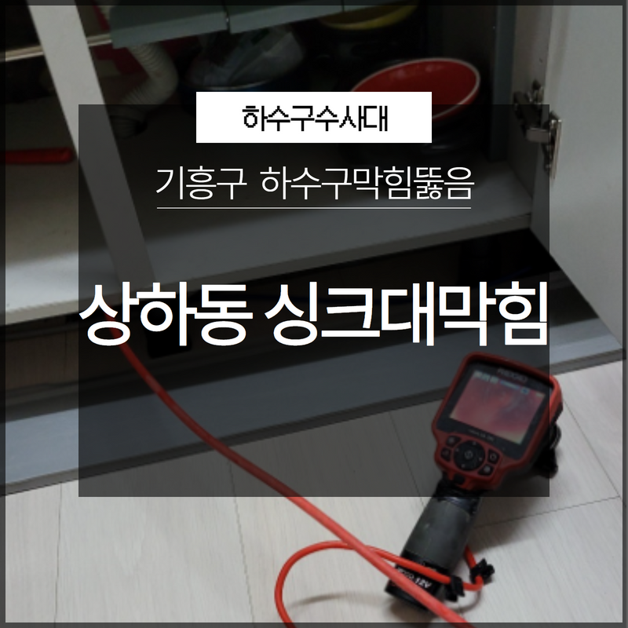
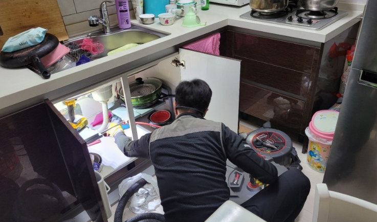
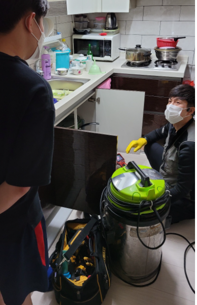
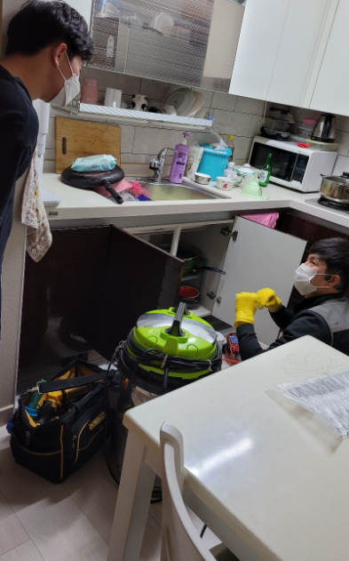
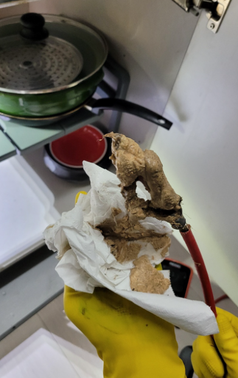
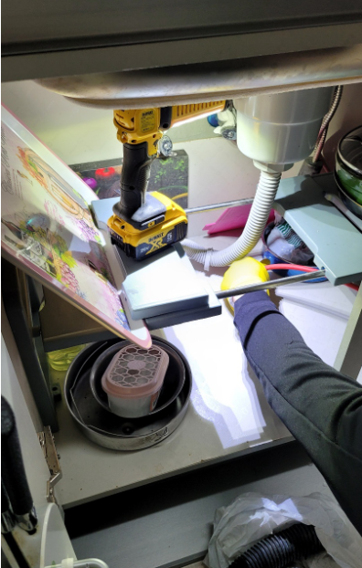
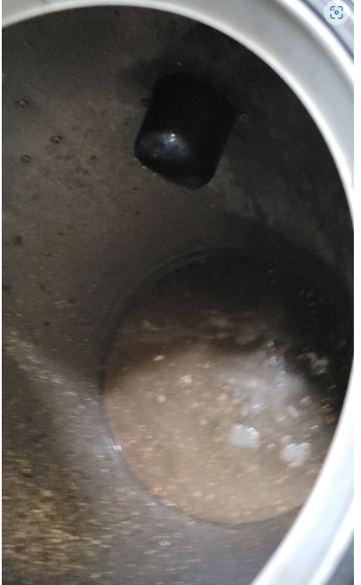

🏠 기흥구 상하동 싱크대하수구막힘 뚫음 갑자기 막히는 경우라도 당황하지 마세요!
용인 기흥 싱크대막힘 전문 시공 후기

📋 작업 개요
- 위치: 용인 기흥, 기흥, 용인
- 서비스 유형: 싱크대막힘, 하수구막힘, 배관막힘, 뚫는업체
- 작업 일시: 2023. 1. 13. 12:21
- 업체명: 하수구수사대 (010-5615-2118)
🔍 문제 상황
안녕하세요 하수구수사대입니다.
지금 같은 겨울철이 되면 하수구 배관의 동파 위험에 대한 안내를 듣곤 합니다. 우리 생활에서 평소에 눈에 잘 보이지는 않지만 생활하수를 흘려보내는 배관의 역할은 아주 중요하다고 할 수 있습니다. 하지만 우리는 배관이 눈에 보이지 않다 보니 평소에는 그 소중함을 잘 모르고 사는 경우가 많이 있는데요 그러다 보니 갑작스러운 막힘으로 인해서 당황스럽고 불편을 겪으신 적이 많이 있으실 것입니다.
특히 지금과 같은 겨울철에는 배관막힘이 발생하게 되면

🔎 원인 분석
💡 전문가 진단: 특히 지금과 같은 겨울철에는 배관막힘이 발생하게 되면
동파까지 될 수 있는 위험이 있기 때문에 평소에 관리를 잘 해주는 것이 필요하다고 할 수 있습니다. 오늘 말씀드릴 현장은 기흥구 상하동 싱크대하수구막힘 뚫음 현장후기로 배관막힘 발생 시 전문업체를 통한 해결이 어떻게 되는지를 알려드리는 시간을 가져보도록 하겠습니다.
이번 현장인 기흥구 상하동 싱크대하수구막힘 뚫음 도착한 곳은
주방에서 물을 가장 많이 사용을 하게 되는 싱크대에서 막힘이 발생한 것이었습니다. 생활을 하면서 우리가 알게 모르게 흘려보내는 음식물 찌꺼기들로 인해서 제대로 걸러지지 않을 경우에는 하수관이 막히기 쉽다고 할 수 있습니다. 특히 요즘 같은 다세대주택들이 많은 경우에는 이러한 막힘이 발생하게 되는 경우가 많이 있습니다.
하수구막힘의 경우는 일반적으로 사람들이 많이 드나드는 음식점에서 자주 발생을 할 수 있는데요 특히나 요리를 자주 하는 싱크대 같은 경우는 자주 막힘이 발생을 하는 곳이라고 할 수 있습니다. 또한 음식점 뿐만 아니라 일반 가정집에서도 관리가 소홀하게 되어서 남은 잔반을 주의 깊게 버리지 않게 되면 하수구가 막히게 되는 일이 자주 발생할 수 있습니다.

🔧 작업 과정
싱크대가 막히게 되면 물이 내려가지 않게 되기 위해서
주방을 사용하거나 요리를 하는 것에도 주부님들의 불편함을 겪을 수밖에 없는 것입니다. 그래서 편안한 일상생활을 하기 위해서는 막힘 발생 시에도 신속하게 하수구를 뚫어 주시는 것이 필요합니다. 최근에는 시중에 배수구를 뚫을 수 있는 약품이나 기구들이 많이 나와 있다 보니 급한 상황이 되었을 때 스스로 해결을 하려고 하시는 분들도 간혹 있습니다.
하지만 직접 해결을 했을 때 잘 해결이 되었다면 다행이지만 오히려 상황을 악화시키는 경우가 많기 때문에 주의를 하시는 것이 필요합니다. 하수구를 통해서 투입한 약품이 오히려 찌꺼기를 쉽게 달라붙게 하면서 이물질들을 더 단단하고 굳게 만들 수 있기 때문에 배관이 가득 차게 되면서 오히려 더 큰 손상이 발생할 수도 있는 것입니다.
그래서 평소보다 물이 잘 내려가지 않게 되거나 문제를 겪고 있는 경우에는 바로 하수구 전문 업체로 연락을 하시는 것이 필요합니다. 이번 방문한 현장인 기흥구 상하동 싱크대하수구막힘 뚫음은 빌라로 싱크대에서 물이 잘 빠져나가지 않게 되면서 연락을 주신 곳이었는데요 처음에 고객님이 혼자 힘으로 해결하려고 노력해 보았지만 처리가 되지 않아서 연락을 주시게 되었습니다.
현장에서 싱크대 하부장을 열어 내시경을 통해서
확인을 한 후에 본격적인 작업을 하였는데요 정확한 원인을 알고 하수구 뚫음을 진행을 하기 때문에 보다 안전하고 확실하게 진행을 할 수 있습니다. 원인에 따른 장비 사용도 중요한데요 원인을 모른 채로 뚫게 되는 경우에는 나중에 해결할 수 없는 더 힘든 과정이 생길 수 있기 때문에 정확하게 해결을 하시는 것이 좋습니다.


✅ 작업 완료
그러므로 전문 업체를 통해서 하수구막힘은
해결을 하시는 것이 현명한 방법이라고 할 수 있습니다.




⚠️ 주방 싱크대 배관 막힘 예방 수칙
- ✅ 기름기가 묻은 식기나 프라이팬은 설거지 전 키친타올로 반드시 기름때를 닦아내세요.
- ✅ 주기적으로 싱크대 개수대에 뜨거운 물을 가득 받아 한 번에 내려 배관 내부 기름을 씻어내세요.
- ✅ 배수구 거름망을 미세한 필터로 사용하시고 음식물 찌꺼기가 틈으로 새어 들지 않게 관리하세요.
- ✅ 베이킹소다와 식초를 뜨거운 물과 함께 일주일에 한 번씩 부어주면 배관 살균과 막힘 예방에 좋습니다.
💡 핵심 정리
- 확실한 장비 작업(내시경 점검 및 샤프트 스케일링)으로 원인을 뿌리 뽑습니다.
- 작업 후 1년 이내에 동일한 부위 재발 시 100% 무상 A/S 서비스를 보장합니다.
- 서울 · 경기 · 인천 전 지역에 24시간 언제든 긴급 출동할 수 있도록 항시 대기 중입니다.
❓ 자주 묻는 질문 (FAQ)
🚨 용인 기흥 싱크대막힘 문제로 고민이신가요?
정확한 원인 진단과 확실한 시공으로 재발 없는 해결을 약속드립니다.
24시간 긴급 출동 | 서울 · 경기 · 인천 전지역 | 1년 내 재발 시 무상 A/S